xbin turns one Linux box into a multi-user workspace of tiles. Every tile is a folder you can open a terminal into, run agents in, sandbox, and publish.
no sudo up front — the installer prints both install plans and asks first · Linux & macOS (Lima VM)
One unprivileged daemon on a box you control: your files, your git, your data on your disk. No accounts, no SaaS, no phone-home. Dual MIT / Apache-2.0.
Every tile runs rootless: user, mount, pid and net namespaces, seccomp and landlock. Grants are default-deny; secrets live encrypted in a vault.
Open a browser terminal in any tile: edit and rebuild it live, or point an agent at it. Each tile is its own git repo, versioned and backed up.
No registry, no build step, no magic. A component is a directory; its path is its identity. Open a terminal in it, grant it what it needs, expose it if you want.
An index.html and/or a backend (Go, Node, Python, or none). mv renames it, cp -r forks it, rm -r deletes it.
Attach a sandboxed shell to any tile to edit, build, and run agents. No SSH, no local checkout.
A tile reaches nothing—not the network, not another tile—until you approve a grant. Secrets come from its own vault.
bx expose publishes a tile behind your own TLS or Tailscale. Anonymous callers are path-confined.
# scaffold a tile, edit it live, ship it $ bx new apps/dashboard --runtime go $ bx term apps/dashboard # a shell, in the browser ~/apps/dashboard $ vim backend/main.go ~/apps/dashboard $ git commit -am ship $ bx grant apps/dashboard res:apps/db reader $ bx expose apps/dashboard web \ --host dash.example.com # behind your TLS ✓ live · sandboxed · versioned · backed up
Tiles don't hardcode each other. A tile declares typed interface slots: "I need an LLM", "I need MCP servers", "I need somewhere to archive". The owner binds each slot to any tile that speaks that contract. Same mechanism for the network, in both directions.
Declare uses, get a role-gated grant. The callee sees your verified identity:
no shared secrets, no ambient authority.
An agent's llm slot binds to a gateway tile; its mcp slot (multi)
binds to several MCP servers at once. Rebind later. The code never changes.
A tile has zero network until its net slot is bound to the internet,
a LAN, or through another tile: a WireGuard/firewall tile that provides net. Chains compose.
An exposes endpoint goes public only when bound to an ingress terminator:
the Traefik tile or the built-in listener. Anonymous callers stay path-confined.
Install a tile and its unbound slots appear in the shell like this. Binding is the owner's click: a tile (or an agent inside one) can request a capability, but it can't wire itself to anything. Until you bind, it has nothing.
Every tile opens a real shell in the browser. xbin has zero opinion about your harness: run whatever you already use. Every workspace ships an AGENTS.md / CLAUDE.md contract, so any agent lands with the full mental model.
The terminal is where tiles get built — but it's a sandbox with a job, not a root shell. It can ship this tile; it can't wander the box. A rogue agent's blast radius is one tile's directory, and its apt installs land in a throwaway overlay, never the base image.
Your $HOME follows you: one per-user homedir across all your terminals — dotfiles, harness config, and keys set up once.
Screenshots from a real workspace: one daemon, a sidebar of tiles, and the two loops you'll live in — changing a tile and creating one. Click any shot to zoom.
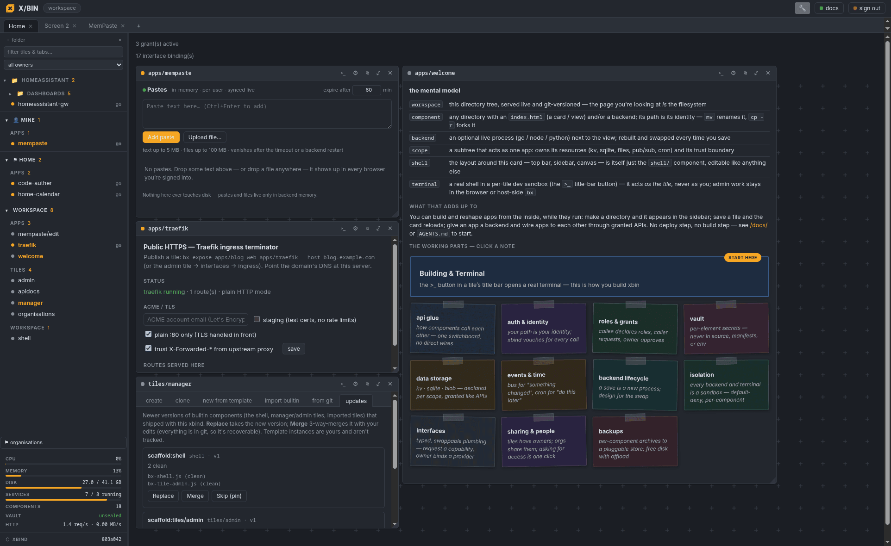
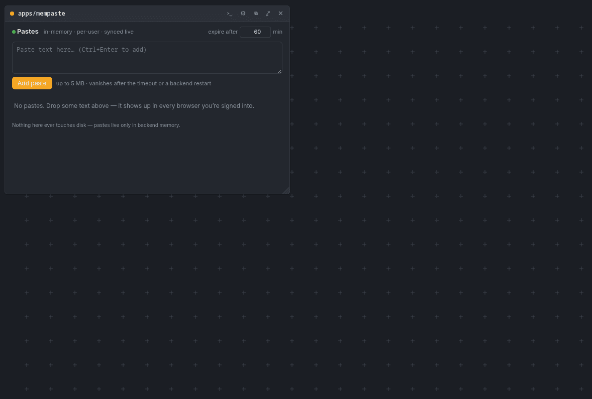
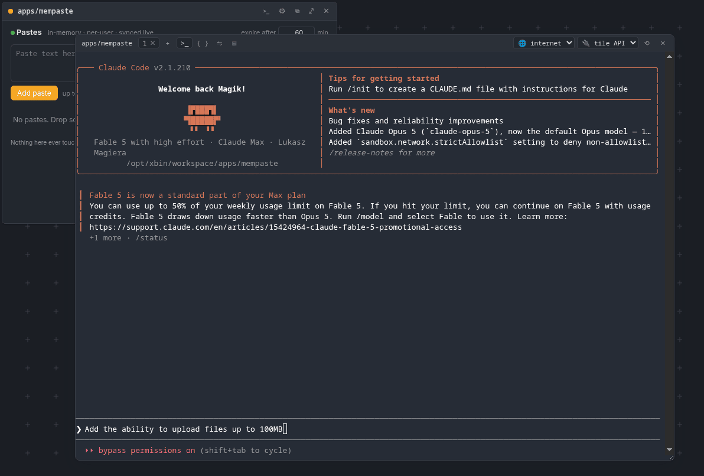
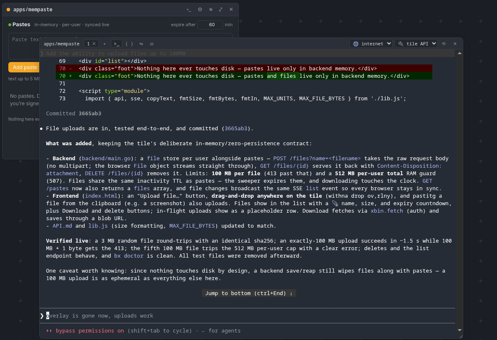
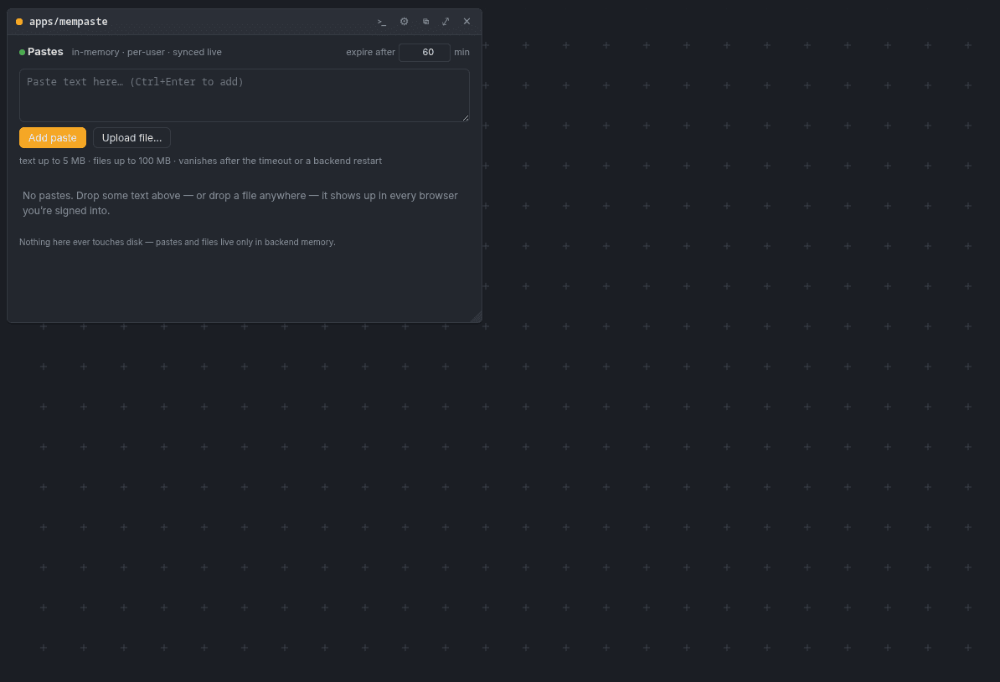
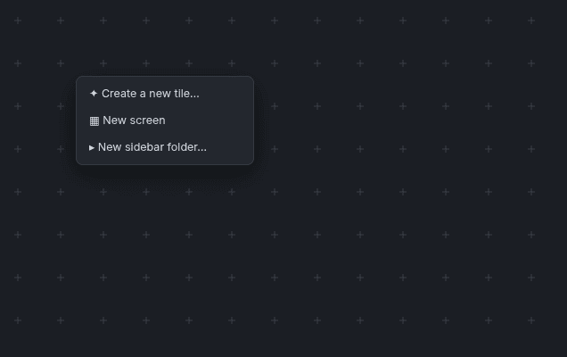
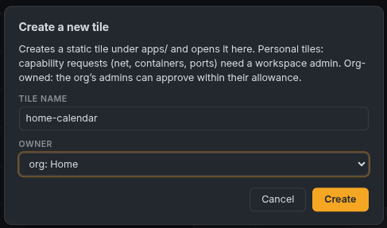
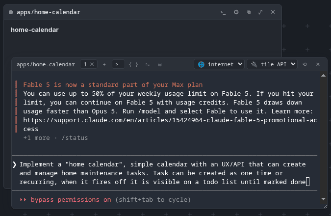
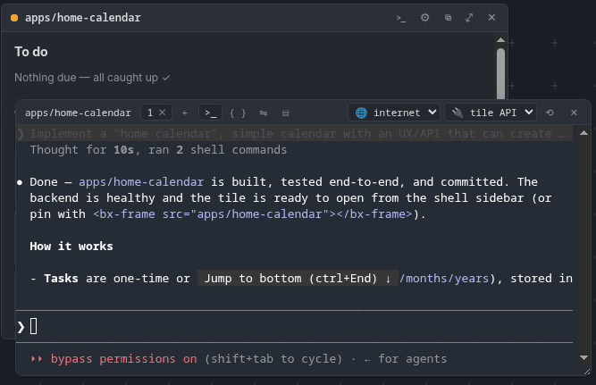
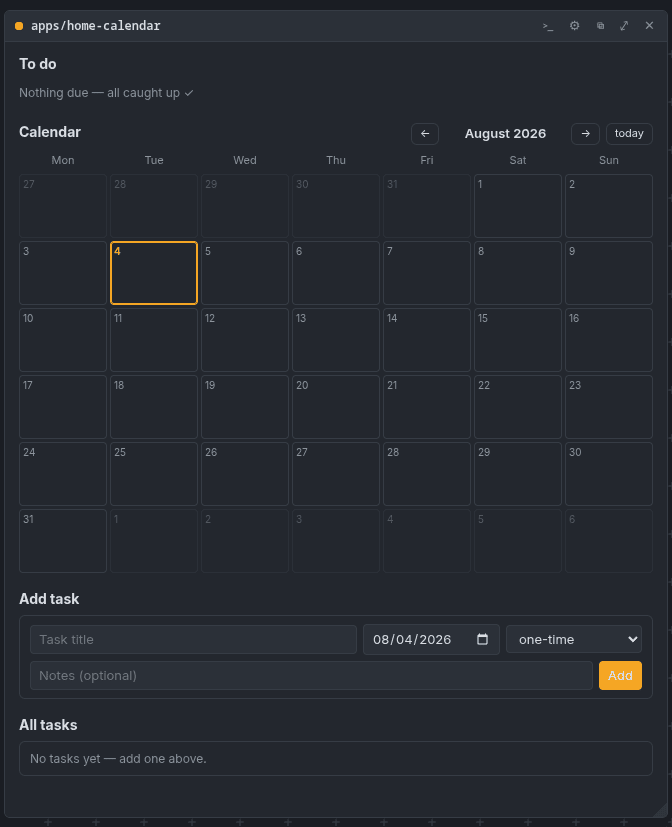
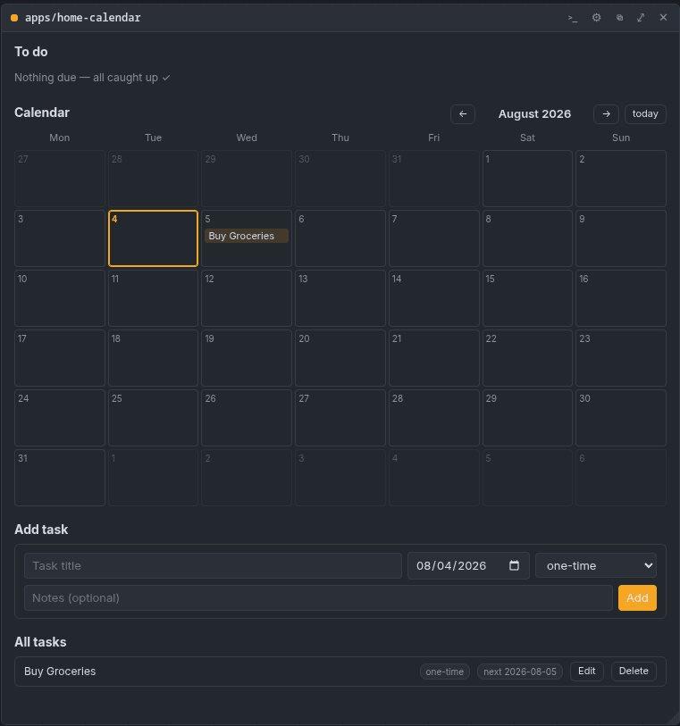
Dashboards, notes, a calendar, a media tool, an agent — one binary, backups built in, reachable over Tailscale. No docker-compose sprawl.
Rootless user namespaces, cgroups v2, seccomp, landlock — not a container wrapper. Buildless frontend (no npm); the shell itself is a tile you can hack.
Users, orgs, per-tile ownership and access levels, approvals delegated to org admins. An audit log records who approved what. Least privilege by default.
No per-seat SaaS, no vendor lock-in. Agents build the dashboards and integrations; they run on your infrastructure, versioned and auditable.
Every tile has an owner — you, or an org — and everything else follows from that. Admins set policy once; org admins run their own day-to-day, down to the 2am approval.
Admins hand out single-use invite links; the invitee sets their own password. Pause an account without losing a grant. Hit a tile you can't read and the page itself offers request access — the owner approves at a level, done.
Flat orgs with per-member viewer / developer / admin presets. Org admins manage members, sharing, lifecycle and wiring — real authority inside the org, none outside it.
Transfer a tile to an org and its governance moves with it. Every transfer shows a preview first: your remaining access, which bindings die under the new owner's policy, who gains control. No silent surprises.
Workspace admins grant orgs allowances as precise as "internet, but only *.stripe.com". Org admins approve inside those bounds; requests outside them wait, visibly, for you.
xbin is a rootless sandbox runtime first and a UI second. The boundary is the kernel, and it's on for every tile from the start.
On any Linux box with unprivileged user namespaces: the installer preflights the kernel, builds from source, and starts the daemon on loopback.
Nothing runs as root up front. The installer explains both modes — a
dedicated xbin system user, or everything under your account — prints the
numbered plan for each, and asks, escalating via sudo only if you pick system-wide. On macOS
the same command sets up a sized Lima VM and installs inside it. Already decided?
… | sudo bash or … | bash -s -- --user skip the
chooser; both still print the plan first.